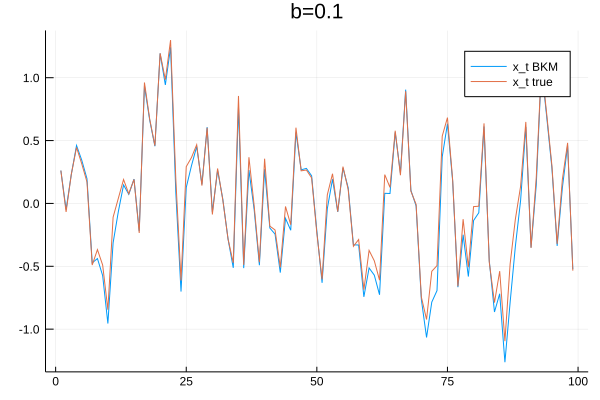
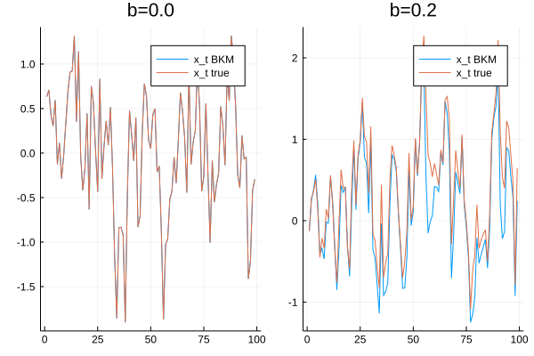
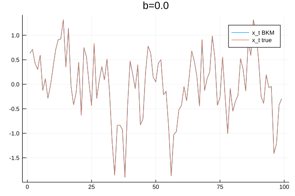
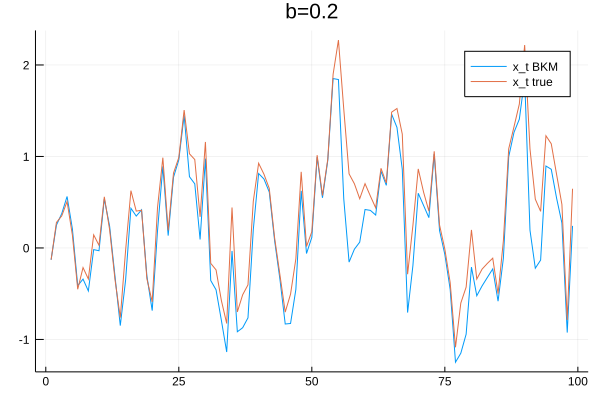

Finding solutions to economic models with heterogeneity and aggregate uncertainty is a notoriously difficult task. It is an active area of research in Mathematics (see mean field games with aggregate uncertainty). Because such models naturally arise when considering economic situations, Economists have developed a battery of techniques to (numerically) solve them. In this post, I would like to describe a recent algorithm by Boppart, Krusell and Mitman (BKM) that is both fast and accurate. I will first describe the problem that Economists face when working with heterogeneous model with aggregate uncertainty, heuristically discuss the BKM algorithm (based on the presentation of Reiter (2018)) and show an application in Julia.
BKM in a nutshell
It is common to use Bellman’s principle of optimality to characterize solutions of a multi-stage decision processes. The principle of optimality leads to a solution in a recursive form $d_{t} = d(S_{t})$, where $S_t$ is a vector of state variables and $d(.)$ a policy function describing the optimal action of a decision-maker when faced with any given state.
An alternative representation of the problem is to consider a solution in the sequence form. At each step in time, a decision-maker observes a new realization of a random process $z_t$ and taking into account the full history of past shocks, the agent makes a new choice to maximize her expected discounted sum of returns: $d_t = d(z_t, z_{t-1}, z_{t-2}, …)$.
While most of the time the recursive form is a much more parsimonious approach, it fails when $S_t$ is infinite-dimensional. In models with heterogeneous agents (HA) and aggregate uncertainty, this is generally the case because the distribution of agents over certain variables will end up being in $S_t$. While this a problem with is the recursive approach (how can we discretize $S_t$ to put it on a computer?), the sequence form is immune to this problem. The BKM algorithm uses this insight, adding the assumption of linearity of $d(.)$ with respect to the aggregate state $z_t$:
$$ d_t = z_t d(1, 0, 0, …) + z_{t-1}d(0, 1, 0, …) + z_{t-2}d(0, 0, 1, …) + … $$ $$ d_t = \sum_{k=0}^{+\infty} z_{t-k} d_{k} $$
where $$ d_{1} = d(1,0,0,…)$$ $$ d_{2} = d(0,1,0,…)$$ $$ d_{3} = d(0,0,1,…)$$
The series of $d_{k}$ describes the trajectory of the economy after an “MIT” shock (when the economy is hit by an unexpected single-period aggregate shock). If the linearity assumption holds, the evolution of equilibrium variables are simply a moving average of past shocks. We made progress because solving for the trajectory after an MIT shock is perfectly feasible in a RA model. As long as one can calculate the steady-state with no aggregate uncertainty and solve the deterministic perfect foresight path, BKM can be used.
Numerical implementation
Here is the implementation of the method using a toy example. I intentionally circumvent the problem of finding the perfect foresight transition path, which is (potentially) the complicated part of BKM. This is the example given in Reiter (2018): the exact model is the non-linear model $x_{t} = a x_{t-1} + b x_{t-1}^2 + z_{t}$
using Distributions
using Plots
# Parameters
max_iter=100 #number of iterations for the simulation
a = 0.5
b = 0.1
sigma_shock=1.0
mu_shock=0.
d = Normal(mu_shock, sigma_shock)
# transition function
function iter_x(x_min1::Float64, a::Float64, b::Float64)
a*x_min1 + b*x_min1^2
end
iter_x (generic function with 1 method)
Impulse response function
Let us assume that the economy is at the non-stochastic steady-state and a shock occurs:
# We assume that after 100 periods, the economy is back to the steady-state
max_iter_mit = 100
x_mit=zeros(max_iter_mit)
# Initial shock
z_t[1] = sigma_shock #a 1 std. deviation
x_mit[1] = 0 #steady-state
for i=2:max_iter_mit
x_mit[i] = iter_x(x_mit[i-1], a, b) + z_t[i-1]
end
# Scaled-version of the impulse response:
x_mit_scaled = x_mit./z_t[1];
I define two functions to calculate the moving average:
function calculate_Xt(x_scaled::Array{Float64,1}, shocks::Array{Float64,1}, t::Int64, kk::Int64)
output = 0.
for k=1:kk
output+=x_scaled[k]*shocks[t-k+1]
end
return output
end
function BPM_path!(XT::Array{Float64,1}, max_iter::Int64, x_scaled::Array{Float64,1}, shocks::Array{Float64,1})
for t=2:max_iter
XT[t] = calculate_Xt(x_scaled, shocks, t, t)
end
end
BPM_path! (generic function with 1 method)
# Initialization
XT = zeros(max_iter);
# Series of shocks
shocks_t = rand(d, max_iter).*0.5;
# Solving using BKM:
@time BPM_path!(XT, max_iter, x_mit_scaled, shocks_t)
# True value:
x_true = zeros(max_iter)
for i=2:max_iter
x_true[i] = iter_x(x_true[i-1], a, b) + shocks_t[i-1]
end
0.025906 seconds (29.30 k allocations: 1.489 MiB, 26.80% gc time)
plot(XT[2:end], label="x_t BKM")
plot!(x_true[2:end], label="x_t true")
title!("b=$(b)")

The previous plot shows how the BKM algorithm approximates the true model and it does quite a good job. Of course, the more the model is linear with respect to $z_t$ (captured by the value of $b_2$), the better the approximation. To illustrate this idea, I use BKM on a perfectly linear model ($b=0$) and on a model with stronger non-linearities ($b=0.2$). As expected, the approximation is perfect when the model is linear and the approximation deteriorates when strong non-linearities are present.
plot(p1,p2)

Conclusion
The BKM algorithm is a new addition to the toolbox of methods to solve HA models. The sequence representation of the problem seems to be a fruitful area of research, as it has also been used in Le Grand and Ragot (2017) and (2019) to develop fast and reliable method to solve HA models. The recent contribution of Auclert at al (2019) also uses a similar approach.
References
- Achdou, Yves, et al. “Partial differential equation models in macroeconomics.” Philosophical Transactions of the Royal Society A: Mathematical, Physical and Engineering Sciences 372.2028 (2014): 20130397.
- Auclert, Adrien, et al. Using the Sequence-Space Jacobian to Solve and Estimate Heterogeneous-Agent Models. No. w26123. National Bureau of Economic Research, 2019.
- Boppart, Timo, Per Krusell, and Kurt Mitman. “Exploiting MIT shocks in heterogeneous-agent economies: the impulse response as a numerical derivative.” Journal of Economic Dynamics and Control 89 (2018): 68-92.
- Le Grand, François, and Xavier Ragot. “Optimal fiscal policy with heterogeneous agents and aggregate shocks.” Document de travail (2017).
- Le Grand, François, and Ragot, Xavier. “Managing Inequality over the Business Cycles: Optimal Policies with Heterogeneous Agents and Aggregate Shocks”. No. 1090. Society for Economic Dynamics, 2019.
- Reiter, Michael. “Comments on” Exploiting MIT Shocks in Heterogeneous-Agent Economies: The Impulse Response as a Numerical Derivative” by T. Boppart, P. Krusell and K. Mitman.” Journal of Economic Dynamics and Control 89 (2018): 93-99.
Appendix
versioninfo()
Julia Version 1.0.3
Commit 099e826241 (2018-12-18 01:34 UTC)
Platform Info:
OS: Linux (x86_64-pc-linux-gnu)
CPU: Intel(R) Core(TM) i7-8850H CPU @ 2.60GHz
WORD_SIZE: 64
LIBM: libopenlibm
LLVM: libLLVM-6.0.0 (ORCJIT, skylake)
### To create plot 2
#### Linear Model
# Parameters
max_iter=100 #number of iterations for the simulation
a = 0.5
b = 0.0
sigma_shock=1.0
mu_shock=0.
d = Normal(mu_shock, sigma_shock)
# IRF
x_mit=zeros(max_iter_mit)
# Initial shock
z_t[1] = sigma_shock #a 1 std. deviation
x_mit[1] = 0 #steady-state
for i=2:max_iter_mit
x_mit[i] = iter_x(x_mit[i-1], a, b) + z_t[i-1]
end
# Scaled-version of the impulse response:
x_mit_scaled = x_mit./z_t[1];
# Initialization
XT = zeros(max_iter);
# Series of shocks
shocks_t = rand(d, max_iter).*0.5;
# Solving using BKM:
@time BPM_path!(XT, max_iter, x_mit_scaled, shocks_t)
# True value:
x_true = zeros(max_iter)
for i=2:max_iter
x_true[i] = iter_x(x_true[i-1], a, b) + shocks_t[i-1]
end
p1 = plot(XT[2:end], label="x_t BKM")
plot!(x_true[2:end], label="x_t true")
title!("b=$(b)")
0.000009 seconds (4 allocations: 160 bytes)

### Plot 2
#### Linear Model
# Parameters
max_iter=100 #number of iterations for the simulation
a = 0.5
b = 0.2
sigma_shock=1.0
mu_shock=0.
d = Normal(mu_shock, sigma_shock)
# IRF
x_mit=zeros(max_iter_mit)
# Initial shock
z_t[1] = sigma_shock #a 1 std. deviation
x_mit[1] = 0 #steady-state
for i=2:max_iter_mit
x_mit[i] = iter_x(x_mit[i-1], a, b) + z_t[i-1]
end
# Scaled-version of the impulse response:
x_mit_scaled = x_mit./z_t[1];
# Initialization
XT = zeros(max_iter);
# Series of shocks
shocks_t = rand(d, max_iter).*0.5;
# Solving using BKM:
@time BPM_path!(XT, max_iter, x_mit_scaled, shocks_t)
# True value:
x_true = zeros(max_iter)
for i=2:max_iter
x_true[i] = iter_x(x_true[i-1], a, b) + shocks_t[i-1]
end
p2 = plot(XT[2:end], label="x_t BKM")
plot!(x_true[2:end], label="x_t true")
title!("b=$(b)")
0.000007 seconds (4 allocations: 160 bytes)
